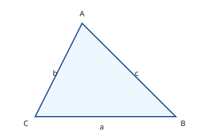
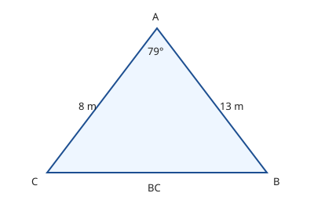

<script>if(location.hostname.endsWith('onrender.com'))location.replace('https://math-sandbox.github.io'+location.pathname+location.search+location.hash)</script>
<section class="theory" data-section="IGCSE-15.7">
<h2>15.7 The sine and cosine rules</h2>
<p class="src">Based on Cambridge IGCSE Mathematics Core &amp; Extended Coursebook, Chapter 15, printed pp.510–518 (the sine rule and the cosine rule). Printed page 510 was read from the coursebook scan. Pages 511–522 are in coursebook scan parts 050–051, which were not on the local corpus; the teaching follows the official books.json title and the standard coursebook development of these two rules, with new wording and new numbers. Teaching stops before 15.8 Area of a triangle on printed p.519. The calculator is assumed to be in degrees mode.</p>
<p class="key-words"><strong>Key words:</strong> <em>sine rule</em>, <em>cosine rule</em></p>
<p>The <strong>sine rule</strong> and the <strong>cosine rule</strong> apply in any triangle, not only in a right-angled triangle. Label the sides \(a\), \(b\) and \(c\) so that side \(a\) is opposite angle \(A\), side \(b\) is opposite angle \(B\), and side \(c\) is opposite angle \(C\).</p>
<figure>

<figcaption>Side \(a\) is opposite \(A\), side \(b\) is opposite \(B\), and side \(c\) is opposite \(C\).</figcaption>
</figure>
<p>The sine rule says that \(\dfrac{a}{\sin A}=\dfrac{b}{\sin B}=\dfrac{c}{\sin C}\). Use it when you know a side and its opposite angle, and one more side or angle.</p>
<p>The cosine rule says that \(a^2=b^2+c^2-2bc\cos A\), and the same pattern holds for the other two sides. Use it when you know two sides and the included angle, or all three sides.</p>
<div class="worked-example"><h4>Worked example 1</h4>
<p class="src">Book: sine-rule style, printed pp.510–518. New numbers. A 30-60-90 pattern, so the answers are integers.</p>
<p>In triangle \(ABC\), angle \(A=30^\circ\), angle \(C=90^\circ\) and side \(a=7\). Find side \(c\).</p>
<ol class="steps">
<li>The sine rule gives \(\dfrac{c}{\sin 90^\circ}=\dfrac{7}{\sin 30^\circ}\). <span class="mark">M1</span></li>
<li>\(\sin 90^\circ=1\) and \(\sin 30^\circ=\dfrac{1}{2}\), so \(c=7\div\dfrac{1}{2}=14\). <span class="mark">A1</span></li>
</ol></div>
<div class="worked-example"><h4>Worked example 2</h4>
<p class="src">Book: cosine-rule style, printed pp.510–518. New numbers. A right angle reduces the cosine rule to Pythagoras, with integer sides.</p>
<p>In triangle \(PQR\), angle \(Q=90^\circ\), \(PQ=5\) and \(QR=12\). Find \(PR\).</p>
<ol class="steps">
<li>The cosine rule at \(Q\) is \(PR^2=5^2+12^2-2\times 5\times 12\cos 90^\circ\). <span class="mark">M1</span></li>
<li>\(\cos 90^\circ=0\), so \(PR^2=25+144=169\) and \(PR=13\). <span class="mark">A1</span></li>
</ol></div>
<h3>Common mistakes</h3><ul>
<li>Pairing a side with the wrong opposite angle when the triangle is labelled.</li>
<li>Using the cosine rule with an angle that is not included between the two given sides.</li>
<li>Leaving the calculator in radian mode, so that \(\sin\) and \(\cos\) of a degree measure are wrong.</li>
</ul>
<div class="quick-check" data-q="QC1">
<h4>Quick check 1</h4>
<p>In triangle \(ABC\), angle \(A=30^\circ\), angle \(C=90^\circ\) and side \(a=5\). What is the length of side \(c\)?</p>
<details>
<summary>Show answer</summary>
<ol class="steps">
<li>The sine rule gives \(\dfrac{c}{\sin 90^\circ}=\dfrac{5}{\sin 30^\circ}\). <span class="mark">M1</span></li>
<li>So \(c=5\div\dfrac{1}{2}=10\). <span class="mark">A1</span></li>
</ol>
<p class="final">\(10\)</p>
</details>
</div>
<div class="quick-check" data-q="QC2">
<h4>Quick check 2</h4>
<p>In triangle \(PQR\), angle \(Q=90^\circ\), \(PQ=9\) and \(QR=12\). What is the length of \(PR\)?</p>
<details>
<summary>Show answer</summary>
<ol class="steps">
<li>The cosine rule at the right angle reduces to Pythagoras: \(PR^2=9^2+12^2=81+144=225\). <span class="mark">M1</span></li>
<li>So \(PR=15\). <span class="mark">A1</span></li>
</ol>
<p class="final">\(15\)</p>
</details>
</div>
<div class="quick-check" data-q="QC3">
<h4>Quick check 3</h4>
<p>In triangle \(ABC\), angle \(A=30^\circ\), angle \(C=90^\circ\) and side \(a=8\). What is the length of side \(c\)?</p>
<details>
<summary>Show answer</summary>
<ol class="steps">
<li>As in Quick check 1, \(c=2\times 8=16\). <span class="mark">A1</span></li>
</ol>
<p class="final">\(16\)</p>
</details>
</div>
<h3>Past paper</h3>
<p class="src">0580/42/O/N/19 Question 6(a) only, 7 marks. Official QP and MS. Part 6(b) is not in this item (6(b)(ii) was already used in IGCSE-14.5).</p>
<figure>

<figcaption>The official diagram: angle \(A=79^\circ\), \(AC=8\) m and \(AB=13\) m.</figcaption>
</figure>
<p>The diagram shows triangle \(ABC\).</p>
<p>(i) Use the cosine rule to calculate \(BC\). [4]</p>
<p>(ii) Use the sine rule to calculate angle \(ACB\). [3]</p>
<details><summary>Show official scheme</summary>
<ol class="steps">
<li>\(BC^2=8^2+13^2-2\times 8\times 13\cos 79^\circ\), so \(BC=13.9\) (to 3 s.f.). Official MS: 13.9[0…] from the cosine rule, M2 for \(8^2+13^2-2\times 8\times 13\cos 79\), or M1 for the implicit cosine form, A1 for 193… . <span class="mark">M2</span> <span class="mark">A1</span> <span class="mark">A1</span></li>
<li>Angle \(ACB=66.6^\circ\). Official MS: 66.6 or 66.60… to 66.65 from the sine rule, M2 for \(\sin ACB=13\sin 79/\text{their (a)(i)}\), or M1 for the sine-rule form, A1. <span class="mark">M2</span> <span class="mark">A1</span></li>
</ol></details>
</section>
